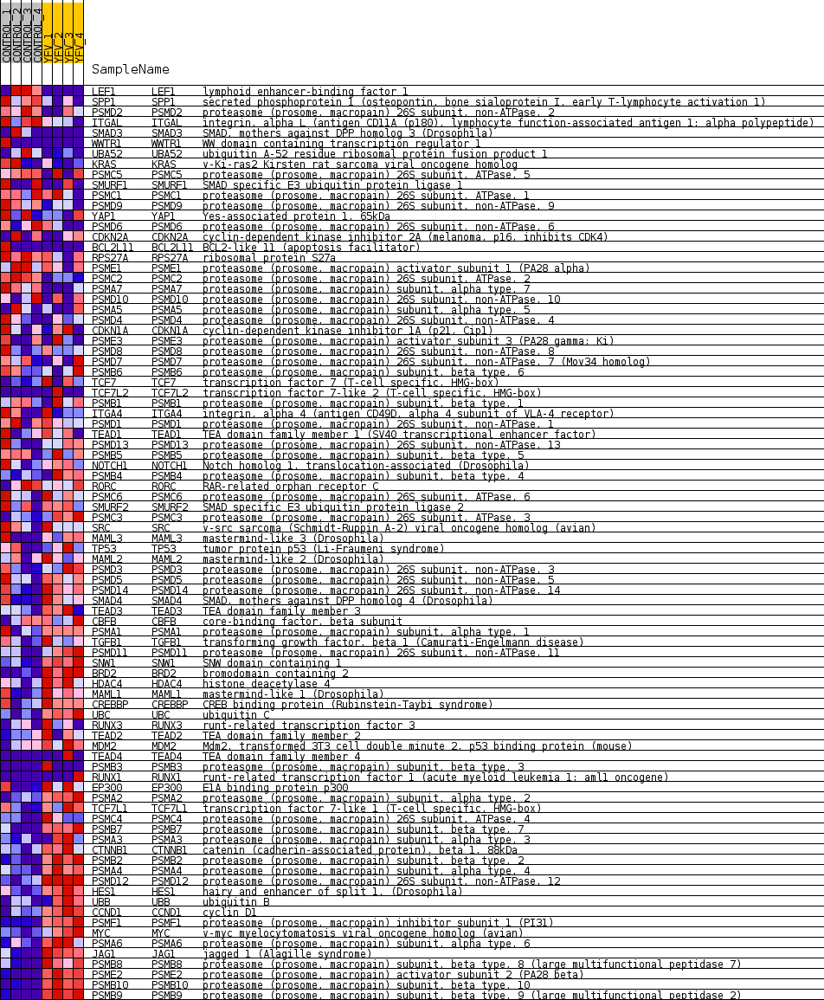
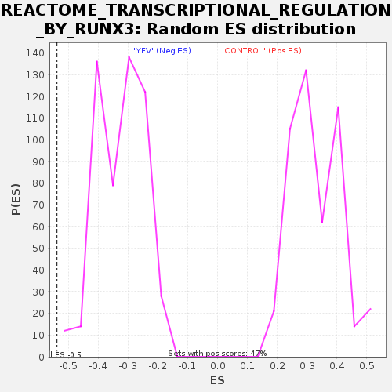

Profile of the Running ES Score & Positions of GeneSet Members on the Rank Ordered List
| Dataset | MATRIZ_GSE99081_collapsed_to_symbols.gsea_CLASE_99081.cls#CONTROL_versus_YFV |
| Phenotype | gsea_CLASE_99081.cls#CONTROL_versus_YFV |
| Upregulated in class | YFV |
| GeneSet | REACTOME_TRANSCRIPTIONAL_REGULATION_BY_RUNX3 |
| Enrichment Score (ES) | -0.5394686 |
| Normalized Enrichment Score (NES) | -1.6705263 |
| Nominal p-value | 0.0 |
| FDR q-value | 0.042473927 |
| FWER p-Value | 0.663 |
| SYMBOL | TITLE | RANK IN GENE LIST | RANK METRIC SCORE | RUNNING ES | CORE ENRICHMENT | |
|---|---|---|---|---|---|---|
| 1 | LEF1 | lymphoid enhancer-binding factor 1 | 84 | 1.339 | 0.0269 | No |
| 2 | SPP1 | secreted phosphoprotein 1 (osteopontin, bone sialoprotein I, early T-lymphocyte activation 1) | 356 | 0.905 | 0.0319 | No |
| 3 | PSMD2 | proteasome (prosome, macropain) 26S subunit, non-ATPase, 2 | 711 | 0.738 | 0.0277 | No |
| 4 | ITGAL | integrin, alpha L (antigen CD11A (p180), lymphocyte function-associated antigen 1; alpha polypeptide) | 901 | 0.674 | 0.0322 | No |
| 5 | SMAD3 | SMAD, mothers against DPP homolog 3 (Drosophila) | 1317 | 0.569 | 0.0201 | No |
| 6 | WWTR1 | WW domain containing transcription regulator 1 | 1775 | 0.500 | 0.0038 | No |
| 7 | UBA52 | ubiquitin A-52 residue ribosomal protein fusion product 1 | 1969 | 0.488 | 0.0036 | No |
| 8 | KRAS | v-Ki-ras2 Kirsten rat sarcoma viral oncogene homolog | 1980 | 0.487 | 0.0147 | No |
| 9 | PSMC5 | proteasome (prosome, macropain) 26S subunit, ATPase, 5 | 3127 | 0.329 | -0.0484 | No |
| 10 | SMURF1 | SMAD specific E3 ubiquitin protein ligase 1 | 3567 | 0.281 | -0.0688 | No |
| 11 | PSMC1 | proteasome (prosome, macropain) 26S subunit, ATPase, 1 | 3697 | 0.267 | -0.0704 | No |
| 12 | PSMD9 | proteasome (prosome, macropain) 26S subunit, non-ATPase, 9 | 3732 | 0.263 | -0.0662 | No |
| 13 | YAP1 | Yes-associated protein 1, 65kDa | 3767 | 0.261 | -0.0620 | No |
| 14 | PSMD6 | proteasome (prosome, macropain) 26S subunit, non-ATPase, 6 | 3986 | 0.243 | -0.0697 | No |
| 15 | CDKN2A | cyclin-dependent kinase inhibitor 2A (melanoma, p16, inhibits CDK4) | 4000 | 0.243 | -0.0646 | No |
| 16 | BCL2L11 | BCL2-like 11 (apoptosis facilitator) | 4122 | 0.233 | -0.0665 | No |
| 17 | RPS27A | ribosomal protein S27a | 4134 | 0.232 | -0.0616 | No |
| 18 | PSME1 | proteasome (prosome, macropain) activator subunit 1 (PA28 alpha) | 4391 | 0.212 | -0.0724 | No |
| 19 | PSMC2 | proteasome (prosome, macropain) 26S subunit, ATPase, 2 | 4826 | 0.173 | -0.0951 | No |
| 20 | PSMA7 | proteasome (prosome, macropain) subunit, alpha type, 7 | 5238 | 0.134 | -0.1173 | No |
| 21 | PSMD10 | proteasome (prosome, macropain) 26S subunit, non-ATPase, 10 | 5332 | 0.127 | -0.1200 | No |
| 22 | PSMA5 | proteasome (prosome, macropain) subunit, alpha type, 5 | 5659 | 0.102 | -0.1378 | No |
| 23 | PSMD4 | proteasome (prosome, macropain) 26S subunit, non-ATPase, 4 | 6348 | 0.049 | -0.1792 | No |
| 24 | CDKN1A | cyclin-dependent kinase inhibitor 1A (p21, Cip1) | 6633 | 0.031 | -0.1960 | No |
| 25 | PSME3 | proteasome (prosome, macropain) activator subunit 3 (PA28 gamma; Ki) | 6661 | 0.029 | -0.1970 | No |
| 26 | PSMD8 | proteasome (prosome, macropain) 26S subunit, non-ATPase, 8 | 6710 | 0.026 | -0.1994 | No |
| 27 | PSMD7 | proteasome (prosome, macropain) 26S subunit, non-ATPase, 7 (Mov34 homolog) | 6854 | 0.018 | -0.2078 | No |
| 28 | PSMB6 | proteasome (prosome, macropain) subunit, beta type, 6 | 7048 | 0.008 | -0.2196 | No |
| 29 | TCF7 | transcription factor 7 (T-cell specific, HMG-box) | 9299 | -0.000 | -0.3589 | No |
| 30 | TCF7L2 | transcription factor 7-like 2 (T-cell specific, HMG-box) | 9332 | -0.000 | -0.3608 | No |
| 31 | PSMB1 | proteasome (prosome, macropain) subunit, beta type, 1 | 9745 | -0.014 | -0.3860 | No |
| 32 | ITGA4 | integrin, alpha 4 (antigen CD49D, alpha 4 subunit of VLA-4 receptor) | 9774 | -0.015 | -0.3874 | No |
| 33 | PSMD1 | proteasome (prosome, macropain) 26S subunit, non-ATPase, 1 | 10102 | -0.030 | -0.4069 | No |
| 34 | TEAD1 | TEA domain family member 1 (SV40 transcriptional enhancer factor) | 10136 | -0.032 | -0.4082 | No |
| 35 | PSMD13 | proteasome (prosome, macropain) 26S subunit, non-ATPase, 13 | 10422 | -0.053 | -0.4245 | No |
| 36 | PSMB5 | proteasome (prosome, macropain) subunit, beta type, 5 | 10473 | -0.058 | -0.4262 | No |
| 37 | NOTCH1 | Notch homolog 1, translocation-associated (Drosophila) | 10684 | -0.074 | -0.4375 | No |
| 38 | PSMB4 | proteasome (prosome, macropain) subunit, beta type, 4 | 10839 | -0.088 | -0.4449 | No |
| 39 | RORC | RAR-related orphan receptor C | 10845 | -0.088 | -0.4431 | No |
| 40 | PSMC6 | proteasome (prosome, macropain) 26S subunit, ATPase, 6 | 11010 | -0.102 | -0.4508 | No |
| 41 | SMURF2 | SMAD specific E3 ubiquitin protein ligase 2 | 11276 | -0.127 | -0.4641 | No |
| 42 | PSMC3 | proteasome (prosome, macropain) 26S subunit, ATPase, 3 | 11528 | -0.149 | -0.4761 | No |
| 43 | SRC | v-src sarcoma (Schmidt-Ruppin A-2) viral oncogene homolog (avian) | 11630 | -0.158 | -0.4786 | No |
| 44 | MAML3 | mastermind-like 3 (Drosophila) | 11650 | -0.160 | -0.4759 | No |
| 45 | TP53 | tumor protein p53 (Li-Fraumeni syndrome) | 11764 | -0.171 | -0.4788 | No |
| 46 | MAML2 | mastermind-like 2 (Drosophila) | 11767 | -0.171 | -0.4748 | No |
| 47 | PSMD3 | proteasome (prosome, macropain) 26S subunit, non-ATPase, 3 | 11846 | -0.178 | -0.4753 | No |
| 48 | PSMD5 | proteasome (prosome, macropain) 26S subunit, non-ATPase, 5 | 11911 | -0.185 | -0.4749 | No |
| 49 | PSMD14 | proteasome (prosome, macropain) 26S subunit, non-ATPase, 14 | 11924 | -0.186 | -0.4712 | No |
| 50 | SMAD4 | SMAD, mothers against DPP homolog 4 (Drosophila) | 12525 | -0.248 | -0.5024 | No |
| 51 | TEAD3 | TEA domain family member 3 | 12586 | -0.253 | -0.5000 | No |
| 52 | CBFB | core-binding factor, beta subunit | 12776 | -0.274 | -0.5051 | No |
| 53 | PSMA1 | proteasome (prosome, macropain) subunit, alpha type, 1 | 12891 | -0.287 | -0.5053 | No |
| 54 | TGFB1 | transforming growth factor, beta 1 (Camurati-Engelmann disease) | 13444 | -0.357 | -0.5309 | Yes |
| 55 | PSMD11 | proteasome (prosome, macropain) 26S subunit, non-ATPase, 11 | 13564 | -0.374 | -0.5293 | Yes |
| 56 | SNW1 | SNW domain containing 1 | 13585 | -0.378 | -0.5214 | Yes |
| 57 | BRD2 | bromodomain containing 2 | 13689 | -0.393 | -0.5184 | Yes |
| 58 | HDAC4 | histone deacetylase 4 | 13694 | -0.394 | -0.5092 | Yes |
| 59 | MAML1 | mastermind-like 1 (Drosophila) | 14084 | -0.457 | -0.5223 | Yes |
| 60 | CREBBP | CREB binding protein (Rubinstein-Taybi syndrome) | 14125 | -0.467 | -0.5136 | Yes |
| 61 | UBC | ubiquitin C | 14182 | -0.479 | -0.5055 | Yes |
| 62 | RUNX3 | runt-related transcription factor 3 | 14199 | -0.481 | -0.4950 | Yes |
| 63 | TEAD2 | TEA domain family member 2 | 14251 | -0.492 | -0.4863 | Yes |
| 64 | MDM2 | Mdm2, transformed 3T3 cell double minute 2, p53 binding protein (mouse) | 14302 | -0.498 | -0.4774 | Yes |
| 65 | TEAD4 | TEA domain family member 4 | 14390 | -0.500 | -0.4708 | Yes |
| 66 | PSMB3 | proteasome (prosome, macropain) subunit, beta type, 3 | 14438 | -0.500 | -0.4617 | Yes |
| 67 | RUNX1 | runt-related transcription factor 1 (acute myeloid leukemia 1; aml1 oncogene) | 14501 | -0.500 | -0.4535 | Yes |
| 68 | EP300 | E1A binding protein p300 | 14599 | -0.516 | -0.4472 | Yes |
| 69 | PSMA2 | proteasome (prosome, macropain) subunit, alpha type, 2 | 14672 | -0.535 | -0.4388 | Yes |
| 70 | TCF7L1 | transcription factor 7-like 1 (T-cell specific, HMG-box) | 14713 | -0.544 | -0.4282 | Yes |
| 71 | PSMC4 | proteasome (prosome, macropain) 26S subunit, ATPase, 4 | 14766 | -0.557 | -0.4180 | Yes |
| 72 | PSMB7 | proteasome (prosome, macropain) subunit, beta type, 7 | 14794 | -0.565 | -0.4061 | Yes |
| 73 | PSMA3 | proteasome (prosome, macropain) subunit, alpha type, 3 | 14958 | -0.609 | -0.4016 | Yes |
| 74 | CTNNB1 | catenin (cadherin-associated protein), beta 1, 88kDa | 15058 | -0.642 | -0.3923 | Yes |
| 75 | PSMB2 | proteasome (prosome, macropain) subunit, beta type, 2 | 15120 | -0.662 | -0.3802 | Yes |
| 76 | PSMA4 | proteasome (prosome, macropain) subunit, alpha type, 4 | 15508 | -0.833 | -0.3842 | Yes |
| 77 | PSMD12 | proteasome (prosome, macropain) 26S subunit, non-ATPase, 12 | 15525 | -0.844 | -0.3649 | Yes |
| 78 | HES1 | hairy and enhancer of split 1, (Drosophila) | 15594 | -0.870 | -0.3482 | Yes |
| 79 | UBB | ubiquitin B | 15642 | -0.918 | -0.3291 | Yes |
| 80 | CCND1 | cyclin D1 | 15671 | -0.941 | -0.3082 | Yes |
| 81 | PSMF1 | proteasome (prosome, macropain) inhibitor subunit 1 (PI31) | 15701 | -0.986 | -0.2863 | Yes |
| 82 | MYC | v-myc myelocytomatosis viral oncogene homolog (avian) | 15733 | -1.017 | -0.2639 | Yes |
| 83 | PSMA6 | proteasome (prosome, macropain) subunit, alpha type, 6 | 15762 | -1.053 | -0.2403 | Yes |
| 84 | JAG1 | jagged 1 (Alagille syndrome) | 15931 | -1.359 | -0.2181 | Yes |
| 85 | PSMB8 | proteasome (prosome, macropain) subunit, beta type, 8 (large multifunctional peptidase 7) | 16014 | -1.655 | -0.1834 | Yes |
| 86 | PSME2 | proteasome (prosome, macropain) activator subunit 2 (PA28 beta) | 16061 | -1.905 | -0.1405 | Yes |
| 87 | PSMB10 | proteasome (prosome, macropain) subunit, beta type, 10 | 16150 | -2.694 | -0.0813 | Yes |
| 88 | PSMB9 | proteasome (prosome, macropain) subunit, beta type, 9 (large multifunctional peptidase 2) | 16195 | -3.614 | 0.0027 | Yes |

